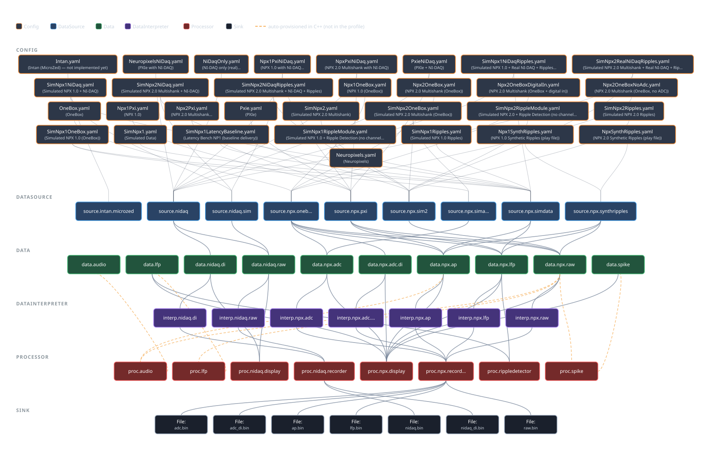

SpikesPeak#
SpikesPeak: The Apex of Artistry and Acceleration
SpikesPeak is a real-time neural acquisition and closed-loop stimulation system. A Qt/C++ backend
streams Neuropixels 1.0 and 2.0 probes to disk and to a GUI that runs in your normal browser
rather than an embedded window: the backend serves the interface over HTTP on port 8234 and
carries every byte back on one WebSocket on port 1234. On top of the stream it detects
sharp-wave ripples online and fires a stimulator on detection. The whole loop — from the threshold
crossing to a pulse on the wire — is measured under a millisecond on both probes (NP1.0 0.92 ms,
NP2.0 0.55 ms with ASAP delivery; 11,000 detections, 11,000 confirmed fires, 0 unmatched). The
numbers are in RecordingTests/CLOSED_LOOP_LATENCY.md.

The hardware it drives#
| Piece | What |
|---|---|
| Probes | Neuropixels 1.0 and 2.0 multishank, with an interactive channel-map (IMRO) editor in the browser |
| Basestations | IMEC PXIe (PCIe/MXI) and the OneBox (USB3/FTDI) — including the OneBox's own 12-channel ADC as a live stream and its DAC as a stimulus output |
| DAQ | National Instruments PXI-6133 — 8 simultaneous-sampling analog inputs, differential wiring |
| Stimulator | a Raspberry Pi 3B+ (or an ESP32-S3-ETH twin) driving an AM Systems 2300 isolator over a 3-line DB-9, commanded by UDP |
| None of the above | every probe, DAQ and ripple signal has a simulated counterpart that drives the identical pipeline, so the app is fully usable with no hardware attached |
Quick start#
Windows:
build.bat --no-pause
run_spikespeak.bat --no-browser
Linux:
./build.sh
./run_spikespeak.sh --no-browser
macOS is not supported yet; developer_docs/Building.md says exactly
what is missing.
Then open http://localhost:8234, choose Source ▸ Simulated Data… ▸ Neuropixels 1.0, and press
Play. You should see streaming traces within a second or two.
Two flags worth understanding rather than copying:
--no-pause—build.batholds its console window open by default so a double-click does not vanish before you can read the result. In a script that becomes a hang at "Press any key to continue", so scripted callers opt out. (SP_NO_PAUSE=1does the same for a whole session.)--no-browser— without it the backend opens the GUI in a dedicated browser app-window for you (--tabputs it in your default browser as a tab instead). Drop the flag if that is what you want; keep it if you are driving a browser yourself.
The launcher is not decoration: the app needs Qt, the vendored Neuropixels DLLs and HDF5 on PATH,
and run_spikespeak reads the build's own CMakeCache.txt to find the exact ones that built it.
Running bin/SpikesPeak.exe directly exits 0xC0000135.
Where the docs are#
| Doc | For |
|---|---|
developer_docs/README.md |
The developer map. Start there to work on the code: architecture, the traps that have already cost people hours, the build, the test gate, and an index of every developer doc. |
user_docs/README.md |
The operator guide. Launching, every toolbar control, illustrated walkthroughs for connecting a probe, recording, ripple detection and export. |
CLAUDE.md |
The rules for AI agents working in this tree — hardware safety, the definition of a green build, what this system optimizes for. Worth reading as a human too; it is short and it is the house style. |
SpikesPeak_Status.md |
The canonical dated log — what happened, when, and why. Append-only, with a session index at the top. |
The docs also read as a browsable book: python scripts/build_docs.py generates it into docs_site/.
Issues#
https://github.com/NeuralAscension/SpikesPeak/issues
The docs cite issues by bare number (#49, #59, #65, …) because that is how they are discussed on the rig. That is where they live.